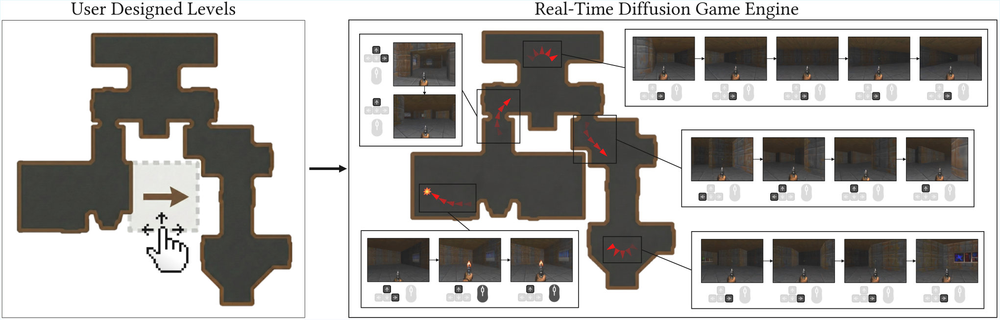
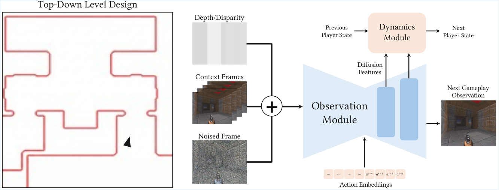
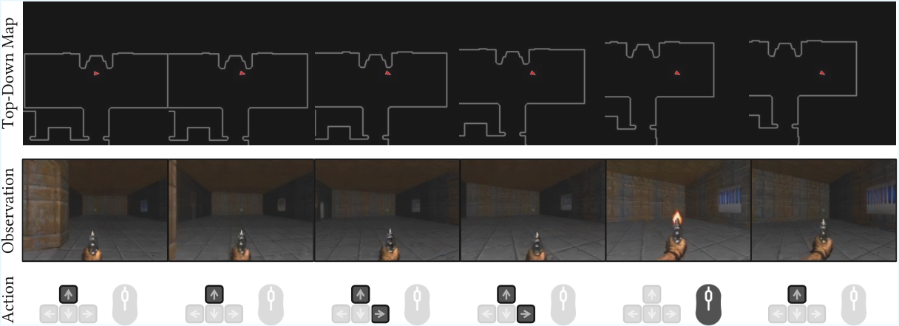
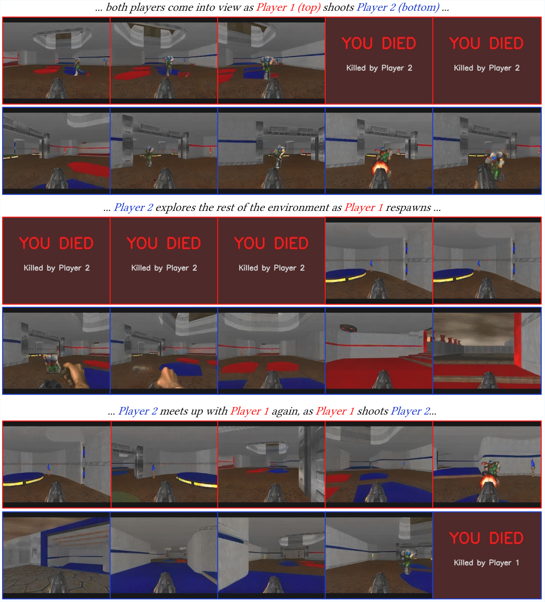

MultiGen: Level-Design for Editable Multiplayer Worlds in Diffusion Game Engines
原论文摘要 · English Abstract
Video world models have shown immense promise for interactive simulation and entertainment, but current systems still struggle with two important aspects of interactivity: user control over the environment for reproducible, editable experiences, and shared inference where players hold influence over a common world. To address these limitations, we introduce an explicit external memory into the system, a persistent state operating independent of the model's context window, that is continually updated by user actions and queried throughout the generation roll-out. Unlike conventional diffusion game engines that operate as next-frame predictors, our approach decomposes generation into Memory, Observation, and Dynamics modules. This design gives users direct, editable control over environment structure via an editable memory representation, and it naturally extends to real-time multiplayer rollouts with coherent viewpoints and consistent cross-player interactions.
用户先画一张关卡地图
地图 $M = (V, E)$ 由二维顶点集与边集组成，用户画几条线就是改一个关卡；小地图是外部记忆的蓝图，生成时锚定它
状态写成显式三元组
传统“帧即状态”被替换为 $S_t = (M, p_t, o_{t-L+1:t})$：地图与位姿是低维、结构化、可编辑的持久信息，帧上下文只负责短期的外观与时间连续性
记忆、观测、动力学三模块分工
记忆模块保管地图与位姿，观测模块负责画下一帧，动力学模块负责推进位姿；“记住世界长什么样”与“画出下一帧”解耦
视差几何条件把地图读进扩散模型
记忆模块在玩家视野内做光线追踪，得到一维深度向量，转成视差后拼进 UNet 输入通道；动作 $a_t$ 用学习嵌入经交叉注意力注入
推理三步循环，多人共享同一份记忆
每步先读记忆得几何信号 $r_t$，再采样下一帧，最后动力学更新位姿；每名玩家跑自己的观测与动力学实例副本，但全部读写同一份共享记忆

问题与动机
扩散游戏引擎已经能实时生成可玩的画面，但论文开篇就点出两个还没解决的交互短板。第一是可控性：创作者几乎无法事先规定环境的结构，关卡长什么样全靠模型临场发挥，长期 rollout 很难复现、很难按意图引导。第二是共享性：现有的视频世界模型基本是单人体验，每个玩家的世界状态都纠缠在各自的观测历史里，多名玩家无法可靠地影响同一个世界。
这两个短板在论文看来其实是同一个缺口：缺少一个显式外部记忆。所谓外部记忆，是一个独立于模型上下文窗口之外的持久状态，会被用户动作持续更新，并在整个生成 rollout 中反复被查询。没有它，环境信息只能靠有限长度的帧窗口隐式携带，窗口一滑走，布局线索就丢了，模型只能凭残缺证据重新猜测结构，于是出现走廊变形、转弯错位、越跑越偏的结构漂移；有了它，地图可以在任意时刻被查阅，多个智能体可以读写同一份状态，跨视角的一致性与跨时间的稳定性就有了共同的锚点。
作者选择 Doom 作为受控但富有表现力的试验场，原因很实际：Doom 既有丰富的一人称动态，又有清晰的关卡布局概念，正好能同时检验 “长期保持结构” 与 “多人共享 rollout” 这两个目标。关卡结构被抽象成一张自上而下的 2D 小地图，用户可以在交互开始前创作或编辑它；这张小地图就是外部记忆的蓝图，生成时锚定它，但细节观测与瞬时互动仍由模型自由合成。
- 单人隐式状态的两个后果：关卡不可编辑、长期 rollout 不可复现。
- 外部记忆的定义：独立于上下文窗口、随用户动作更新、全程可查询的持久状态。
- Doom 被选为试验场：既有一人称动态，又有关卡布局这一清晰的全局结构。
- 小地图是记忆的蓝图：粗粒度几何定结构，细节画面仍由模型生成。
核心思想
核心思想可以概括为一句话：不要把世界状态藏进帧里，要把它写出来、拆开来、共享它。论文把传统的 “帧即状态” 设计替换为显式状态 $S_t = (M, p_t, o_{t-L+1:t})$，其中 $M$ 是静态关卡地图，$p_t$ 是玩家位姿，$o_{t-L+1:t}$ 是长度为 $L$ 的最近帧视觉上下文。这里 $M$ 与 $p_t$ 是低维、结构化、可编辑的持久信息，$o_{t-L+1:t}$ 只负责短期的外观与时间连续性；三者分工不同，缺一不可。
第二个关键思想是模块化分解：生成不再由单个扩散网络包揽，而是拆成记忆（Memory）、观测（Observation）、动力学（Dynamics）三个模块。记忆模块保管地图与位姿；观测模块负责画下一帧；动力学模块负责推进位姿、让状态随时间前进。这种分解把 “记住世界长什么样” 与 “画出下一帧长什么样” 解耦：前者是低维的几何与状态维护，后者是高维的图像生成，各自用适合自己的结构去学，系统也因此变得可控、可解释、可扩展。
第三个思想是：同一个记忆机制同时解决编辑与多人两个问题。编辑时，用户改的是 $M$——移动一段墙、换一个房间布局，观测模块每步都重新读 $M$，画面自然跟着变；多人时，所有玩家读写同一份 $M$ 与玩家位姿集合 $\{p_t^{(i)}\}_{i=1}^{N}$，其中上标 $i$ 标示第 $i$ 名玩家，$N$ 是当前玩家总数，一个玩家的动作通过共享记忆影响另一个玩家下一帧能看到什么。两个应用不是两个补丁，而是同一设计的两个推论，这是这篇论文在结构上最漂亮的一点。
- 显式状态 $S_t = (M, p_t, o_{t-L+1:t})$：地图、位姿与帧上下文分工不同。
- 三模块分解：记忆管状态、观测管画帧、动力学管推进。
- 编辑与多人是同一机制：改 $M$ 即改世界，共享 $M$ 即共享世界。
- 低维状态与高维生成解耦：结构不随上下文长度衰减。
模型结构与关键机制
记忆模块先把关卡写成显式的几何。地图 $M = (V, E)$ 由二维顶点集 $V = \{v_i\}_{i=1}^{N_v}$ 与边集 $E = \{e_j\}_{j=1}^{N_e}$ 组成，其中每个顶点 $v_i \in \mathbb{R}^2$ 是平面上的一个点，每条边 $e_j = (u_j, w_j)$ 连接顶点 $v_{u_j}$ 与 $v_{w_j}$，表示一段墙或可行走布局的边界；$N_v$ 与 $N_e$ 分别是顶点与边的数量。玩家信息则参数化为位姿 $p_t = (x_t, y_t, \theta_t) \in \mathbb{R}^2 \times \mathbb{S}^1$，其中 $(x_t, y_t)$ 是玩家在地图坐标系中的位置，$\theta_t$ 是朝向角，$\mathbb{S}^1$ 表示角度所在的圆周。这个表示刻意保持粗粒度：它只规定墙在哪里、人在哪里，不规定纹理与小物件，给生成留出自由度，也让用户编辑变得简单——画几条线就是改一个关卡。
观测模块是条件扩散模型，建模下一帧的分布：
$$o_{t+1} \sim p_{\phi}(o \mid o_{t-L+1:t}, r_t, a_t)$$
其中 $o_{t+1}$ 是要生成的下一帧，$p_{\phi}$ 是参数为 $\phi$ 的观测模型，$o_{t-L+1:t}$ 是最近 $L$ 帧上下文，$r_t$ 是从记忆读出的几何条件信号，$a_t$ 是当前动作。几何条件是这篇最具体的机制创新：记忆模块在玩家视野内做光线追踪，得到一条一维深度向量，再把它转成视差（深度的倒数）以突出近处结构；随后把这条一维视差映射成与 UNet 输入分辨率一致的空间张量，作为额外通道与 $L$ 帧上下文拼接进 UNet。动作 $a_t$ 则用可学习的嵌入表示，通过交叉注意力条件 token 注入 UNet，让去噪器按控制输入调节生成，而不改动卷积输入接口。训练用标准的速度参数化扩散目标：
$$\mathcal{L}_{\mathrm{obs}} = \mathbb{E}_{t,\tau}[\|v_{\phi}(\cdot \mid o_{t-L+1:t}, r_t, a_t; \tau) - v^{\star}(o_{t+1}, \tau)\|_2^2]$$
其中 $\tau$ 是采样的扩散时间步，$v_{\phi}$ 是模型预测的速度，$v^{\star}(o_{t+1}, \tau)$ 是与所选扩散参数化对应的标准速度目标，$\mathbb{E}_{t,\tau}$ 表示对时间步 $t$ 与扩散步 $\tau$ 求期望，$\|\cdot\|_2^2$ 是平方 $\ell_2$ 误差。
动力学模块是一个轻量 Transformer 编码器，负责把状态往前推一步。它预测位姿增量：
$$\Delta\hat{p}_t = \mathcal{D}_{\psi}(p_t, a_t, r_t, f_t)$$
其中 $\mathcal{D}_{\psi}$ 是参数为 $\psi$ 的动力学网络，$p_t$ 是当前位姿，$a_t$ 是动作，$r_t$ 是与观测模块共用的几何信号，$f_t$ 是去噪下一帧时 UNet 中间层汇聚成的定长特征表示；把增量加到当前位姿上（朝向分量做角度 wrap）就得到预测的下一位姿 $\hat{p}_{t+1}$。训练时用环境提供的真实位姿监督：平移用 $\ell_2$ 损失，朝向用 wrap 后的角度误差。值得注意的设计是动力学复用了观测 UNet 的中间特征 $f_t$：画面里刚出现的东西（比如迎面走来的对手）可以直接影响位姿更新，而不必另起一套视觉编码器。
- 地图 $M = (V, E)$：顶点加线段的粗粒度几何，可直接编辑。
- 位姿 $p_t = (x_t, y_t, \theta_t)$：位置加朝向，朝向在圆周 $\mathbb{S}^1$ 上。
- 几何条件 $r_t$：视野内光线追踪得一维深度，转视差后拼进 UNet 输入通道。
- 动作 $a_t$：学习嵌入经交叉注意力注入，不改卷积接口。
- 动力学 $\Delta\hat{p}_t = \mathcal{D}_{\psi}(p_t, a_t, r_t, f_t)$：轻量 Transformer，复用 UNet 瓶颈特征 $f_t$。

训练与推理流程
训练分两条数据线。关卡设计数据用 Obsidian 地图生成器程序化生成 100 张结构随机的地图，再部署一个预训练 Doom 智能体去探索这些地图，收集超过 1000 万帧带动作与玩家位姿的游戏画面；地图多样性迫使模型依赖外部记忆提供全局结构，而不是背下少数几张固定关卡。多人数据则基于 ViZDoom 收集死亡竞赛序列：一个预训练智能体对阵四个相同智能体，同样超过 1000 万帧，每条序列记录自机动作、所有活跃玩家的位姿与地图 $M$；多人研究只在一张地图上训练与评估。关键的一点是：因为每个模型实例只生成自己的第一人称视角，多人视角的一致性来自共享外部记忆，不需要显式的多视角监督数据，单视角训练数据就够了。
训练时要处理一个经典的 train-test 不匹配：训练时观测模块以真实上下文帧为条件，测试时却要以自己生成的历史为条件。论文沿用 GameNGen 等 prior work 的做法，对全部上下文帧加随机尺度的高斯噪声（noised-context training），让模型见过不完美的历史，从而在长自回归 rollout 下更稳健。动力学模块则与观测模块配合训练，用真实位姿监督位姿增量预测。
推理时系统按三步循环，把当前状态与动作映射为下一帧与更新后的状态：
$$(S_t, a_t) \mapsto (\hat{o}_{t+1}, S_{t+1})$$
其中 $S_t = (M, p_t, o_{t-L+1:t})$ 是当前状态，$a_t$ 是动作，$\hat{o}_{t+1}$ 是生成的下一帧，$S_{t+1}$ 是推进后的状态。每步先查询外部记忆，由当前位姿与地图算出几何读出 $r_t$；再用观测扩散模型采样下一帧 $\hat{o}_{t+1}$；最后动力学模块结合动作、几何与 UNet 中间特征更新位姿，并把新帧滑入上下文窗口。为稳定长 rollout，推理使用历史引导（history guidance）：条件分支接收干净的上下文帧，无条件分支接收加噪的上下文，兼顾对近期历史的忠实与对不完美输入的鲁棒。多人时每名玩家跑自己的观测与动力学实例副本，但全部读写同一份共享记忆；每步所有玩家提交动作、查询共享状态、生成各自视角的下一帧，再由各自的动力学模块更新共享位姿集合，死亡与重生就对应于把某位玩家的位姿从共享记忆中移除或重新加入。
- 关卡数据：100 张 Obsidian 程序化地图，超 1000 万帧，配动作与位姿。
- 多人数据：ViZDoom 死亡竞赛，1 对 4，超 1000 万帧，单张地图评估。
- 加噪上下文训练：训练时给上下文帧加随机高斯噪声，弥合自回归推理的分布漂移。
- 推理三步：读记忆得 $r_t$、采样 $\hat{o}_{t+1}$、动力学更新位姿并滑动窗口。
- 历史引导：条件分支用干净上下文，无条件分支用加噪上下文。
实验与结果
关卡条件生成实验把 MultiGen 与三类基线放在同一条起跑线上：无记忆的 GameNGen、以及把自上而下小地图作为条件输入的 ControlNet 与 IP-Adapter。所有方法从相同的初始观测与位姿出发，在同一动作序列下 rollout $T$ 步，再与底层模拟器的真实观测比较 SSIM、PSNR 与 LPIPS，并在早期（1–128 步）与后期（128–256 步）分别汇报。结果是 MultiGen 全面占优，但优势的分布比绝对数值更说明问题：整体 PSNR 为 19.32 dB，高于 GameNGen 的 18.77 dB 与 ControlNet 的 18.51 dB；整体 SSIM 为 0.418，略高于 GameNGen 的 0.405；整体 LPIPS 为 0.453，低于 GameNGen 的 0.471。到了后期 128–256 步，差距拉大：PSNR 为 18.59 dB，对 GameNGen 的 17.33 dB 高出 1.26 dB，LPIPS 为 0.505，对 GameNGen 的 0.562 低了 0.057——这正是外部记忆该发力的地方，隐式状态基线越往后越容易幻觉出布局变化并在自回归采样中不断放大，而有地图可查的方法始终被锚定在真实布局上。
多人实验的度量更贴近 “共享世界是否真的共享”：对手可见性准确率。用预训练视觉语言模型（VLM）作自动裁判，逐帧判断生成画面里对手是否出现，再与同一 VLM 在真实帧上的判断对照，汇报准确率、精确率与召回率（对手可见为正类）。MultiGen 的准确率为 75.38%，精确率为 88.12%，召回率为 65.07%；而最强的基线分屏模型（split-screen，把双视角拼进一个网络联合建模）只有 65.31% 准确率与 44.59% 召回率，ControlNet 与 IP-Adapter 更低。召回率的差距最有信息量：基线经常把本该可见的对手漏掉（精确率不低、召回率很低，说明不是乱画对手，而是根本看不见对手），MultiGen 把召回率抬高了约 20 个百分点，说明共享记忆确实让 “对手在你视野里” 这件事跨视角保持了一致。定性上双人 rollout 呈现出完整的击杀—死亡—重生循环：玩家 1 击杀玩家 2 后，后者从共享状态中移除、呈现死亡动画，随后重生并重新加入，再次相遇又被击杀；三人示例中，玩家 1 看不到其他人、玩家 2 同时看到玩家 1 与玩家 3、玩家 3 只看到玩家 2，各视角与共享状态逐一对齐。
上下文帧数消融进一步划清了记忆与上下文各自的贡献。把条件帧数 $L$ 从 2 变到 32，SSIM 从 0.709 升到 0.789，PSNR 从 27.6 dB 升到 30.0 dB，LPIPS 从 0.121 降到 0.089；但 $L=8$ 之后收益迅速变平（SSIM 在 0.783 附近徘徊），说明加长窗口有收益也有天花板，真正让后期 rollout 不崩的是窗口之外的地图 $M$，而不是把窗口再拉长一点。速度上，全系统每名玩家用一块 NVIDIA A100 约跑 20 FPS，且加玩家只需多跑一份观测与动力学实例、不拖慢他人，论文因此称其为实时的多人生成体验——不过要注意，这里的 20 FPS 是每玩家一块 A100 的配置，换算到普通硬件或更多玩家时成本会显著上升。
- 关卡实验：后期 PSNR 18.59 dB 对 GameNGen 的 17.33 dB，优势集中在长 rollout。
- 多人实验：对手可见性准确率 75.38%，召回率 65.07%，远高于分屏基线的 44.59%。
- 消融：$L$ 从 2 到 32 提升明显，但 $L=8$ 后收益变平，记忆才是长程稳定的来源。
- 实时性：每玩家一块 A100 约 20 FPS，加玩家不拖慢他人。
- 定性亮点：击杀、死亡、重生循环在双视角下互相一致。
实验结果 · 数据
关卡条件生成：后期 rollout（128–256 步）PSNR（dB，越高越好）
| 项目 | 数值 |
|---|---|
| IP-Adapter | 17.19 dB |
| ControlNet | 17.45 dB |
| GameNGen | 17.33 dB |
| MultiGen | 18.59 dB |
多人一致性：VLM 裁判的对手可见性判断（%，越高越好）
| 项目 | 准确率 | 精确率 | 召回率 |
|---|---|---|---|
| ControlNet | 60.71 | 82.16 | 39.2 |
| 分屏基线 | 65.31 | 86.86 | 44.59 |
| MultiGen | 75.38 | 88.12 | 65.07 |
ControlNet
分屏基线
MultiGen
上下文帧数消融：SSIM 随条件帧数 L 的变化（越高越好）
| 项目 | 数值 |
|---|---|
| L=2 | 0.709 |
| L=4 | 0.775 |
| L=8 | 0.783 |
| L=16 | 0.782 |
| L=32 | 0.789 |
数字最能说明问题的地方不是整体均值，而是后期分段：关卡实验整体 PSNR 上 MultiGen 只比 GameNGen 高 0.55 dB，到了 128–256 步则高出 1.26 dB，LPIPS 也从整体低 0.018 扩大到后期低 0.057。这正是外部记忆的理论预测——隐式状态的误差随自回归步数累积、后期最先崩，而每步都能查到的地图 $M$ 把漂移锚住了；整体 SSIM 只从 0.405 升到 0.418 也提醒读者，这篇赢在结构稳定性，不是画面质量的全面跃升。
多人实验的胜负手在召回率而不在精确率：MultiGen 召回率 65.07%，比最强的分屏基线 44.59% 高出约 20 个百分点，而精确率只从 86.86% 升到 88.12%。结合消融看，$L$ 从 2 增到 8 时 SSIM 从 0.709 升到 0.783、此后基本走平，说明视觉上下文的收益有明确天花板，真正把长程与跨视角一致性撑起来的，是窗口之外的共享记忆。
水分与局限也要如实标出：多人定量评估依赖 VLM 裁判，其自身误判会进入 75.38% 这个数字；多人实验只在单张地图上做，关卡泛化与多人泛化并不对称；20 FPS 的实时性是每玩家一块 A100 的配置，成本不低；地图 $M$ 之外的纹理与小物件不被保存，重访时外观仍可能不一致。这些数字证明的是共享记忆在受控 Doom 环境里有效，而不是它已解决开放世界的一致性问题。


局限与争议
论文自己承认的第一个局限很关键：系统依赖显式状态保持长程一致，但地图 $M$ 之外的场景属性——纹理、小物件——没有被显式保存，重访同一区域时外观可能不一致。换句话说，MultiGen 保证了 “墙还在那里、人在那里”，但不保证 “墙还是那面墙”；结构一致性与外观一致性被拆开了，前者解决了，后者仍悬着。第二个局限是动力学模型并不完美，小的位姿误差会在长 rollout 中累积；论文称动作仍与合理运动对齐、整体游戏体验得以保留，但这等于承认位姿漂移没有被根除，只是被记忆锚定掩盖了部分后果。
还有几个论文没有大肆强调、读者应当自己留意的局限。多人实验只在一张地图上训练与评估，关卡泛化（100 张地图）与多人泛化（1 张地图）并不对称，换一张地图的多人表现是未验证的。多人定量评估依赖 VLM 裁判：VLM 自身的误判会同时污染生成帧与真实帧的标签，虽然对照设计抵消了一部分偏差，但 75.38% 这个数字的绝对可信度仍受裁判质量制约。关卡实验的整体 SSIM 优势其实很小（0.418 对 0.405），主要胜负手在后期 PSNR 与 LPIPS 上，说明这篇的贡献是结构稳定性而非画面质量的全面跃升。最后，Doom 本身是风格与几何都高度受限的试验场：墙是直线段、视角是一人称、交互是射击与移动，把同一套 “顶点加线段” 记忆搬到开放世界或非欧几何里，地图表示本身就需要重新设计。
争议点还在于 “显式” 的代价：显式记忆之所以好编辑，是因为它先验地规定了世界能被什么表示；一旦真实世界的结构超出 $M = (V, E)$ 的表达能力（曲面、可变形物体、动态关卡元素），编辑接口反而会变成表达瓶颈。论文把可编辑性建立在粗粒度几何上，这是它的力量来源，也是它的天花板：越是想让用户自由创作，越需要更丰富的记忆表示，而更丰富的表示又会重新引入学习与一致性的难题。
- $M$ 之外的纹理与小物件不被保存，重访时外观可能不一致。
- 动力学位姿误差会累积，长期仍有漂移风险。
- 多人只在单张地图上评估，泛化能力未验证。
- VLM 裁判本身有噪声，对手可见性数字不宜当作绝对真理。
- 整体 SSIM 优势很小，胜负手是后期稳定性而非画质跃升。
- 显式表示的代价：$M = (V, E)$ 规定了可编辑的上限，超出其表达能力的结构无从编辑。
为什么今天还重要
这篇论文的重要性不在 Doom，也不在某一张 PSNR 表，而在于它给扩散游戏引擎补上了一个缺失的原语：可读写的世界状态。从 World Models 到 Dreamer 再到 GameNGen，世界模型的状态长期是隐式的——要么藏在 RNN 的隐状态里，要么藏在潜变量里，要么藏在最近几帧里；MultiGen 把状态摆到台面上，变成人能画、能改、多人能共享的一张图。这一步把世界模型从 “生成器” 推向 “模拟器”：生成器关心下一帧像不像，模拟器还要关心世界是否自洽、是否可复现、是否容得下多个行动者。
对今天的生成式游戏与具身智能，这个转向有直接的后续意义。关卡设计、协同任务、多智能体仿真、数字孪生，都需要一个 “大家共同相信的世界”：设计师改一次布局，所有玩家与智能体看到的都跟着变；一个智能体推倒一堵墙，另一个智能体的观测里墙就该倒了。MultiGen 的答案是把这种共同相信的东西做成一等公民，而不是让每个模型各自从视频历史里去猜。它的分布式多人设计——每玩家一份观测与动力学实例、共享一份记忆——也预示了可扩展的多人世界模型该长什么样：玩家数可以变，模型接口不用变。
当然，这篇更像一个起点而非终点。它证明了粗粒度几何记忆在 Doom 上够用，但没有回答记忆该有多丰富、该由谁来维护、该如何与语言指令或物理规则结合。后续工作可以沿着三条线走：把 $M$ 从线段升级为更丰富的场景表示（语义地图、3D 结构、可变形物体），把动力学从位姿预测扩展为完整的物理与事件状态更新，以及把 VLM 裁判式的一致性评估换成更可靠的几何真值度量。读这篇时最值得带走的不是某个数字，而是一个设计判断：当生成模型要长期、要多人、要可控时，先给世界一个显式的、可编辑的家，再让扩散模型去画画。
- 补上缺失原语：可读写的世界状态，让世界模型从生成器走向模拟器。
- 多人共享世界需要共同相信的状态，MultiGen 把它做成一等公民。
- 分布式设计：玩家数可变而模型接口不变，是可扩展多人世界模型的雏形。
- 未竟问题：记忆该多丰富、由谁维护、如何结合语言与物理规则。
关键术语
- 显式外部记忆
- 独立于模型上下文窗口之外的持久状态，如本篇的地图 $M$ 与玩家位姿 $p_t$，可被用户动作更新、被生成过程反复查询，也可被多人共享读写。
- 扩散游戏引擎
- 把扩散模型当作游戏引擎的做法：以历史帧与动作为条件，自回归地逐帧生成可交互的游戏画面，GameNGen 是其代表。
- 视差几何条件
- 从记忆读出的几何信号 $r_t$：在玩家视野内光线追踪得一维深度并转成视差（深度倒数），再拼进 UNet 输入，让生成贴合地图几何。
- 动力学模块
- 轻量 Transformer $\mathcal{D}_{\psi}$，根据动作 $a_t$、几何信号 $r_t$ 与 UNet 特征 $f_t$ 预测位姿增量 $\Delta\hat{p}_t$，推进共享记忆中的玩家状态。
- 历史引导
- 推理时的稳定技巧：条件分支用干净上下文帧，无条件分支用加噪上下文，兼顾对近期历史的忠实与对自生成历史的鲁棒。
- 对手可见性一致性
- 多人评估指标：用 VLM 裁判判断生成帧里对手是否出现，并与真实帧对照，检验不同玩家的视角是否对同一共享世界达成一致。
思考题
思考题 1：如果把地图 $M$ 从顶点加线段升级为带语义或 3D 结构的表示，MultiGen 的记忆、观测与动力学三个模块分别要改什么？
查看参考答案
记忆模块要把 $M$ 从 $(V, E)$ 换成能承载语义或 3D 几何的新表示，并重新设计读出方式：语义地图需要按类别编码的读出，3D 结构可能需要体素或点云式的光线追踪来算 $r_t$，否则观测模块拿到的几何信号仍是二维的；观测模块的输入通道与条件方式要跟着变，UNet 需要学会利用新增的语义或深度细节，而不是只对齐墙的位置；动力学模块的改动相对最小，因为它只关心位姿 $p_t$ 的推进，但如果新表示包含可动或可变形物体，动力学就要从只预测位姿扩展为同时更新这些物体的状态，否则记忆与画面会再次脱节。判断是：表示升级的代价主要落在记忆读出与观测条件上，动力学只在世界开始包含动态物体时才必须扩展。
思考题 2：为什么 MultiGen 的多人召回率（65.07%）远高于分屏基线（44.59%），而精确率（88.12% 对 86.86%）却只高了一点点？这个不对称说明了什么？
查看参考答案
精确率只惩罚把不存在的对手画出来的假阳性，召回率惩罚把本该可见的对手漏掉的假阴性；分屏基线精确率 86.86% 已不低，说明它很少无中生有地画对手，问题出在召回率只有 44.59%，即超过一半该出现的时候对手根本没出现——因为它的状态藏在各自有限的观测历史里，没有共享的位姿集合告诉它对手此刻就在视野内。MultiGen 把召回率抬到 65.07%，恰恰是因为共享记忆在每步都明确提供其他玩家的位姿，观测模块知道 “对手应该在这里”，漏画大幅减少；而精确率只从 86.86% 升到 88.12%，说明 “不乱画对手” 本来就不是难点，难点一直是 “别漏掉该出现的对手”，共享状态解决的正是后者。
思考题 3：既然上下文帧数 $L$ 从 8 增到 32 几乎不再提升，为什么论文仍保留 $L$ 帧视觉上下文，而不是只用地图 $M$ 与位姿 $p_t$ 来生成？
查看参考答案
因为地图 $M$ 与位姿 $p_t$ 只规定了结构，没有规定外观：同一段墙在不同光照、不同纹理、不同时刻看起来可以完全不同，第一次经过与重访时的画面细节也需要视觉记忆来衔接。$L$ 帧上下文提供的是短期的外观与时间连续性——颜色、纹理、运动模糊、刚发生的事件——这些是低维几何给不了的；消融表也证实了这一点：$L$ 从 2 增到 8 时 SSIM 从 0.709 升到 0.783，提升显著，说明视觉上下文确实在起作用，只是到 $L=8$ 后边际收益耗尽，再加帧也补不上结构信息。判断是：$M$ 管长期结构、$L$ 帧管短期外观，两者互补而非互相替代，论文保留上下文正是因为它只让记忆负责记忆擅长的事。
谱系与位置
这篇是 GameNGen 路线的直接续作与一次结构性分叉：它继承了 GameNGen 把扩散模型当作自回归下一帧生成器的做法——以最近若干帧为条件、以下一个动作为控制信号、在 Doom 上做可交互 rollout，也继承了加噪上下文训练与历史引导等抗漂移手段；但它否定了 GameNGen “状态就等于最近几帧” 的隐式假设，把状态从帧窗口里抽出来，写成一张静态地图加一组玩家位姿的显式外部记忆，并把原来一个扩散网络包揽的活拆成记忆、观测、动力学三个模块。于是 GameNGen 只能做到单人、不可编辑、越跑越忘布局，而 MultiGen 能做到开局前画好关卡、多人共用同一个世界、长期 rollout 仍贴合设计好的结构；在整个 interactive world model 脉络里，它标志着扩散游戏引擎从 “会动的视频生成器” 转向 “带可读写世界状态的模拟器”，与 Dreamer、Genie 那种把状态藏进潜变量里的做法形成对照：这里的状态是人能看懂、能改、能共享的。